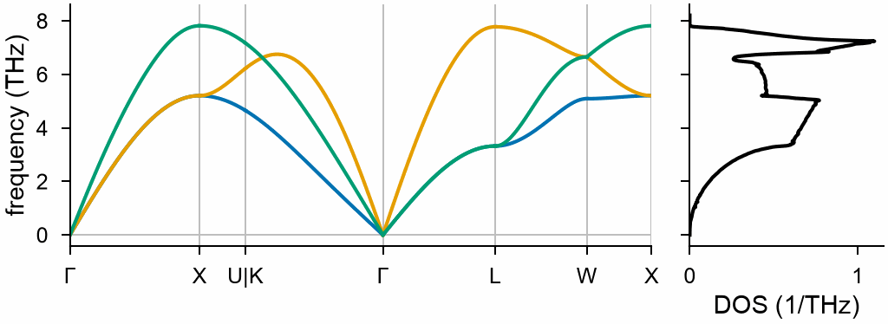

Phonons¶
mdapy.lattice_dynamics.phonons(system, calculator, *, supercell=None,
displacement=0.01, symmetry=None) gives the harmonic vibrations of a crystal from the
forces on atoms displaced in a supercell: frequencies and polarization
vectors at any wave vector, band structures, densities of states and the
thermodynamic properties of the vibrations.
from mdapy.build import build_crystal
from mdapy.lattice_dynamics import phonons, primitive_cell
from mdapy.simulation import minimize
crystal = minimize(
build_crystal("fcc", 3.615, elements="Cu"), potential, cell="full", max_stress=1e-4
).system
cell = primitive_cell(crystal) # one atom
result = phonons(cell, potential)
result.frequencies([0.5, 0.5, 0.5]) # THz at L
bands = result.band_structure("fcc") # Γ–X–U|K–Γ–L–W–X
bands = result.band_structure("auto", connected=True) # any crystal, with seekpath
dos = result.dos(20) # states per THz per atom
thermal = result.thermal([100, 300, 600]) # F, E, S, C_V per atom
from mdapy.visualization import plot
with plot.style():
fig, (left, right) = plot.figure(
"single", ncols=2, sharey=True, width_ratios=[3, 1]
)
plot.band_structure(bands, ax=left)
plot.phonon_dos(dos, ax=right)
plot.save(fig, "images/phonons", formats=("png",))

The phonon dispersion of copper along Γ–X–U|K–Γ–L–W–X with the EAM potential, and the density of states beside it.
Relax the crystal first
The force constants are those of the atoms where they are. Relax the positions and the box first, as above: forces left on the atoms, or a stress on the box, change the frequencies, and a crystal away from a minimum of the energy can have imaginary frequencies.
| Name | Type | Default | Unit | Meaning |
|---|---|---|---|---|
system |
System |
the cell of the crystal, periodic in every direction, or of a sheet, with an element or a mass column; best its primitive cell |
||
calculator |
Calculator |
computes the forces | ||
supercell |
int32, (3,) int32 or (3, 3) int32 | repeats of the cell along its vectors, or the integer matrix whose rows times the vectors of the cell are the vectors of the supercell; by default the supercell nearest a cube that is at least twice the cutoff of the calculator thick in every direction | ||
displacement |
float64 | 0.01 | Å | the displacement \(h\) of the atoms |
symmetry |
bool or None |
None |
move only the atoms and along the axes that symmetry does not relate to others, with the symmetry operations of the crystal, found by spglib: True, False, or by default whenever spglib is installed |
The calculator computes the forces on the supercell six times for each atom of the cell, so the primitive cell is the cheapest: one atom of fcc copper takes 6 computations, its cubic cell of four atoms 24. With the symmetry of the cell, through the operations that map the supercell onto itself, one atom of each set of equivalent atoms moves, along the fewest axes whose images under the operations that keep it in place span space, and by \(-h\) only where no such operation turns the axis around: fcc and bcc take one computation, cubic cell or primitive cell, hcp 2 and L12 3; the forces of the other displacements are images of these. The force constants are the same to rounding where the operations turn axes onto axes, as in cubic crystals; where they turn them by 60°, as in hcp, they differ by the error of the differences, of the order of \(h^2\). A crystal without symmetry, such as a special quasirandom structure, gains nothing. The default supercell is built from the cell whatever its shape: the primitive cell of fcc gives a cube of 4 × 4 × 4 cubic cells for a cutoff of 5.5 Å, the same supercell as the cubic cell gives. The force constants of a supercell reach half across it; the default supercell takes in the interactions within the cutoff, while many-body interactions such as EAM reach twice as far, so a larger supercell may change the frequencies a little.
primitive_cell(system, *, tolerance=1e-4) gives the smallest cell of a
crystal: the atoms of one primitive cell, in a box of short lattice vectors
of the crystal with the same origin. Atoms are alike when they have the
same element, type and mass; tolerance is how far in Å an atom may be
from the image of another. A box that is already primitive comes back as
it is.
Results¶
phonons returns a Phonons. Wave vectors are in units of the reciprocal
lattice vectors of the cell: \(\mathbf q = (h, k, l)\) is
\(h\mathbf b_1 + k\mathbf b_2 + l\mathbf b_3\), with
\(\mathbf a_i\cdot\mathbf b_j = 2\pi\delta_{ij}\).
| Attribute or method | Type | Meaning |
|---|---|---|
cell |
System |
the crystal whose vibrations these are |
supercell |
(3, 3) int64 | matrix of the supercell; read-only |
force_constants |
(n, nS, 3, 3) float64 | force constants \(\Phi\) in eV/Ų between each atom of the cell and each atom of the supercell (S cells, the cell itself first); read-only |
frequencies(q) |
(3n,) or (K, 3n) float64 | frequencies in THz at one or K wave vectors, ascending; imaginary ones negative |
modes(q) |
tuple of float64 and complex128 arrays | the frequencies, and the (3n, n, 3) or (K, 3n, n, 3) complex polarization vector of each mode |
band_structure(path, *, points=51, connected=False) |
BandStructure |
the frequencies along a path |
dos(mesh=20, *, frequencies=None, sigma=None, projected=False) |
PhononDOS |
the density of states |
thermal(temperatures, *, mesh=20) |
ThermalProperties |
the thermodynamic properties of the vibrations |
Band structures. path is one of:
"auto": the standard path of the crystal from its symmetry, any crystal in any orientation, by seekpath (Hinuma et al. (2017)), which must be installed (pip install seekpath); its special points are turned into wave vectors of the cell;"sc","fcc","bcc"or"hexagonal": the standard path of that lattice, that of Setyawan and Curtarolo (2010) for sc, bcc and hexagonal and that of seekpath for fcc, without seekpath, for a cell with the axes of its conventional cell along x, y and z, or with a along x and c along z, asbuild_crystalmakes them;- the sections of a path by hand, each a list of labeled wave vectors
joined by straight lines,
[[("Γ", (0, 0, 0)), ("X", (0.5, 0, 0.5))], ...].
points is the number of wave vectors on each line. The frequencies are
ascending at each wave vector, so that two branches that cross swap
columns there; with connected, each column follows one branch through
crossings, by its polarization vector from one wave vector to the next. At
points where several branches have the same frequency, as at the special
points, their polarization vectors mix, so each branch is followed past
them by the vector it had before; at the start of a section, branches of
the same frequency are told apart by their order at the next wave vector.
| Attribute | Type | Meaning |
|---|---|---|
q |
(P, 3) float64 | the wave vectors |
distances |
(P,) float64 | their distance along the path in 1/Å |
frequencies |
(P, 3n) float64 | frequencies in THz, ascending, or a branch in each column when connected |
labels |
tuple of (float64, str) | the distance and label of each special point; where the path breaks, the two labels join, as in "U\|K" |
write(path) |
writes the band structure as phonopy writes band.dat |
BandStructure.write writes the format of phonopy's band.dat: the
distances of the ends of the lines, then each branch line by line, the
distances without the factor 2π as phonopy has them; files of MDAPY and of
phonopy, from a calculation with VASP for example, plot the same way.
read_band_structure(path) reads such a file into a BandStructure, its
distances with the factor 2π, without the wave vectors, which the file
does not hold. To draw a band structure of another calculation on one of
MDAPY's along the same path, its distances can be moved line by line onto
those of MDAPY, which differ as the lattice constants do:
import numpy as np
from mdapy.lattice_dynamics import read_band_structure
dft = read_band_structure("band.dat") # from phonopy
ends = [d for d, _ in dft.labels]
x = np.interp(dft.distances, ends, [d for d, _ in bands.labels])
ax = plot.band_structure(bands)
ax.plot(x, dft.frequencies, color="k", lw=0.8)
Densities of states. The modes on a mesh through Γ of mesh wave
vectors along each reciprocal lattice vector give the density by the linear
tetrahedron method, or with a Gaussian of width sigma THz for each mode.
frequencies are where the density is given, by default 501 from 0 to a
little above the highest. Imaginary frequencies, of a crystal that is not
stable, show as negative ones, and the default frequencies then start a
little below the lowest. With projected, each atom of the cell has its
own part.
| Attribute | Type | Meaning |
|---|---|---|
frequencies |
(F,) float64 | frequencies in THz |
dos |
(F,) float64 | states per THz per atom, integrating to 3 |
projected |
(F, n) float64 or None |
the density of each atom of the cell, each integrating to 3, whose mean is dos |
Thermodynamic properties. Sums over the modes on the mesh, per atom; modes below 1e-3 THz, the translations of the crystal, are left out. A mode of imaginary frequency has no harmonic free energy: along it the energy falls, so the thermodynamic properties of a crystal with such modes do not exist.
| Attribute | Type | Unit | Meaning |
|---|---|---|---|
temperatures |
(T,) float64 | K | the temperatures |
free_energy |
(T,) float64 | eV | the Helmholtz free energy \(F\) of the vibrations, with the zero-point energy |
energy |
(T,) float64 | eV | their energy \(E\), with the zero-point energy |
entropy |
(T,) float64 | eV/K | their entropy \(S\) |
heat_capacity |
(T,) float64 | eV/K | their heat capacity at constant volume \(C_V\) |
Errors¶
phonons raises InvalidParameter for a box that is not periodic in every
direction or has no atoms, an atom with neither element nor mass, a
calculator that does not compute forces, a supercell that is not positive
integers or a matrix of integers with a positive determinant, a
displacement that is not positive, and symmetry=True without spglib;
primitive_cell for a box that is not
periodic. frequencies and modes raise it for wave vectors that are not
three numbers each; band_structure for an unknown lattice, a cell that
is not that lattice in the standard orientation, a section of fewer than
two wave vectors, or fewer than two points, and ImportError for "auto"
without seekpath; dos and thermal for a mesh or a sigma that is not
positive, and thermal for a negative temperature and for imaginary
frequencies below −0.01 THz on the mesh, which mean that the crystal is not
stable or the supercell is too small.
Definition¶
The force constants are central differences of the forces \(\mathbf F\) on the atoms \(j\) of the supercell when atom \(a\) of the first cell moves by \(\pm h\) along \(\beta\):
made symmetric, \(\Phi_{a\beta,(b,\mathbf L)\gamma} = \Phi_{b\gamma,(a,-\mathbf L)\beta}\), and summing to zero over \(j\), so that moving the whole crystal costs no energy. The dynamical matrix of the atoms \(a\) and \(b\) of the cell, of masses \(m_a\) and \(m_b\), is
where the sum runs over the atoms \(j\) of the supercell that are copies of \(b\), and \(\mathbf T\) over the \(N_j\) translations of the supercell that put \(j\) nearest to \(a\), all equally near (Born and Huang (1954)). Its eigenvalues are \(\omega^2\), the frequencies \(\nu = \omega/2\pi\), with the sign of the eigenvalue; its eigenvectors \(\mathbf e\) are the polarization vectors, so that atom \(b\) in the cell at \(\mathbf R\) moves as \(\mathbf e_b\, e^{i\mathbf q\cdot(\mathbf R + \mathbf r_b) - i\omega t}/\sqrt{m_b}\).
The density of states per atom of a cell of \(n\) atoms, over \(K\) wave vectors, is
with each delta function spread over the tetrahedra of the mesh between the frequencies at their corners (Blöchl et al. (1994)), or a Gaussian. The projected density of atom \(a\) weighs each mode by \(|\mathbf e_a|^2\), over the corners of each tetrahedron.
With \(x = h\nu/k_B T\), each mode adds
and the sums over the \(3nK\) modes are divided by \(nK\).